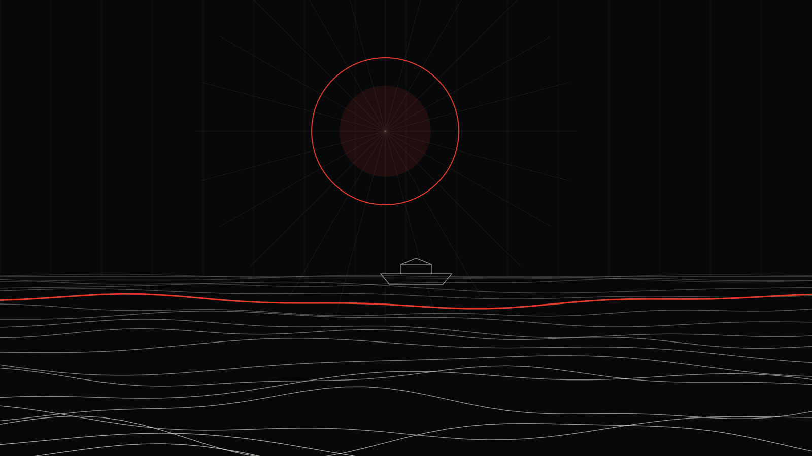

Gaziantep Instagram Reklamı ve Sosyal Medya Yönetimi: Gastronomi ve Sanayi Şehrinde Fark Yaratmak

Gaziantep'te bir baklavacı açtığını düşün. Kaçıncı baklavacı olursun? Gaziantep'te rekabet sadece yoğun değil; Türkiye çapında tanınan markalarla aynı şehirde yarışıyorsun.
Gaziantep, Güneydoğu'nun en büyük sanayi ve ticaret şehri, UNESCO'nun gastronomi şehri ve Türkiye'nin en önemli ihracat merkezlerinden biri. Bu yüzden Gaziantep'te Instagram reklamı, bölgenin diğer illerinden çok farklı bir oyun.
Gaziantep'in reklam haritası
Gastronomi
Gaziantep, 2015'te UNESCO Yaratıcı Şehirler Ağı'na gastronomi alanında katıldı. Antep baklavası ve Antep fıstığı coğrafi işaretli, Türkiye'nin her yerinde aranan ürünler. Bu durum iki fırsat yaratıyor:
- Şehirdeki restoranlar: Gaziantep'e "yemek için" gelen ziyaretçilere ulaşmak.
- İnternetten satış: Baklava, fıstık, kuruyemiş, baharat ve yöresel ürünleri tüm Türkiye'ye satmak.
Sanayi ve ihracat
Organize sanayi bölgeleri, tekstil, makine, gıda ve halı sektörleri. Bu firmalar için müşteri genellikle Gaziantep dışında; Google arama reklamları, LinkedIn ve Meta'da işletme sahiplerine yönelik reklamlar öne çıkar.
Şehir esnafı
Şahinbey ve Şehitkamil'deki kafeler, klinikler, kurslar, butikler, güzellik merkezleri. Büyük şehir rekabeti; kreatif ve hedefleme belirleyici.
Gaziantep'te öne çıkmanın yolu
- Kreatif: Herkesin "en iyi baklava" dediği bir şehirde iddia değil, görüntü kazanır: fıstığın yeşili, yufkanın inceliği, ustanın eli.
- Hedefleme: Şehir içi reklamları semt bazında daraltmak; şehir dışı satış reklamlarını büyük şehirlere ve ilgili kitlelere yönlendirmek.
- Test: Aynı ürün için farklı açılışları denemek ve kazananı büyütmek. Bunu bu yazıda anlattık.
Gaziantep'in ilçeleri
- Merkez: Şahinbey, Şehitkamil
- Nizip — zeytinyağı, fıstık ve Zeugma
- İslahiye, Nurdağı — yeniden ayağa kalkan ilçeler
- Oğuzeli, Araban, Yavuzeli, Karkamış
Fiyatlar
Gaziantep merkezde rekabet nedeniyle reklam bütçesi bölgenin küçük ilçelerine göre daha yüksek tutulmalı. Reklam bütçesi doğrudan platformlara ödenir. Sosyal medya paketlerimiz aylık 15.000 TL'den başlıyor. Bütçe hesabı için bu rehbere bakabilirsin.

Bu yazıyı kim yazdı? Neden bize güvenebilirsin?
Merhaba, ben İsa Tosun; Noah Reklam Ajansı'nın kurucusuyum. Görsel iletişim tasarımcısıyım. Marka kimliği, sosyal medya reklamcılığı, arayüz tasarımı, motion design, 3D görselleştirme ve yapay zekâ destekli prodüksiyon üzerine çalışıyorum. Strateji, tasarım ve reklamı tek bir elde topluyoruz; yani reklamını kuran kişiyle görselini tasarlayan ekip aynı masada.
Ajansımız İstanbul'da. Ama Instagram reklamı tamamen dijital yürüyen bir iş: Gaziantep'te bir işletmeyle çalışmak, İstanbul'daki bir işletmeyle çalışmaktan farksız. Toplantıyı WhatsApp'ta ya da görüntülü görüşmede yapıyoruz, raporu her ay telefonuna gönderiyoruz.
Neden içinin rahat olabileceğini kısaca anlatayım:
- Fiyatlarımız açık. Sosyal medya paketlerimiz aylık 15.000 TL, 27.000 TL ve 39.000 TL; sitede yazıyor, sürpriz yok.
- Paran ajansta durmaz. Reklam hesabı senin işletmenin adına açılır, reklam bütçesi senin kartından doğrudan Meta'ya, TikTok'a ya da Google'a ödenir. Harcamanın tamamını kendi panelinden görürsün.
- Her ay rapor. Ne kadar harcandı, kaç kişiye ulaşıldı, kaç mesaj ya da satış geldi; hepsi anlaşılır bir raporla önüne gelir.
- Muhatabın belli. Bir çağrı merkezine değil, doğrudan bize yazarsın: 0546 632 83 39.
Gaziantep'te işletmen için reklamın nasıl kurulacağını merak ediyorsan, reklam yönetimi sayfamıza göz atabilir ya da doğrudan WhatsApp'tan yazabilirsin.
Sıkça sorulan sorular
Baklavamı Instagram'dan tüm Türkiye'ye satabilir miyim?
Evet. Güven veren bir hesap, güçlü ürün videoları, net kargo ve ödeme bilgisiyle büyük şehirlere satış reklamları yapılabilir. Baklava gibi hassas ürünlerde kargo ve paketleme sürecinin hazır olması önemli.
Sanayi firmam için Instagram reklamı mantıklı mı?
Firmanın müşterisi kim olduğuna bağlı. B2B firmalar için genellikle Google arama reklamları ve LinkedIn daha etkili; Instagram ise marka bilinirliği ve işe alım için kullanılabilir.
Gaziantep'teki ajanslar yerine neden sizinle çalışayım?
Önemli olan ajansın konumu değil, işi nasıl yaptığı. Fiyatlarımız açık, reklam hesabın senin adına açılıyor ve her ay rapor alıyorsun.
İsa Tosun
Noah Reklam Ajansı'nın kurucusu. Strateji, tasarım ve dijital pazarlamayı tek bir rotada birleştiriyor.